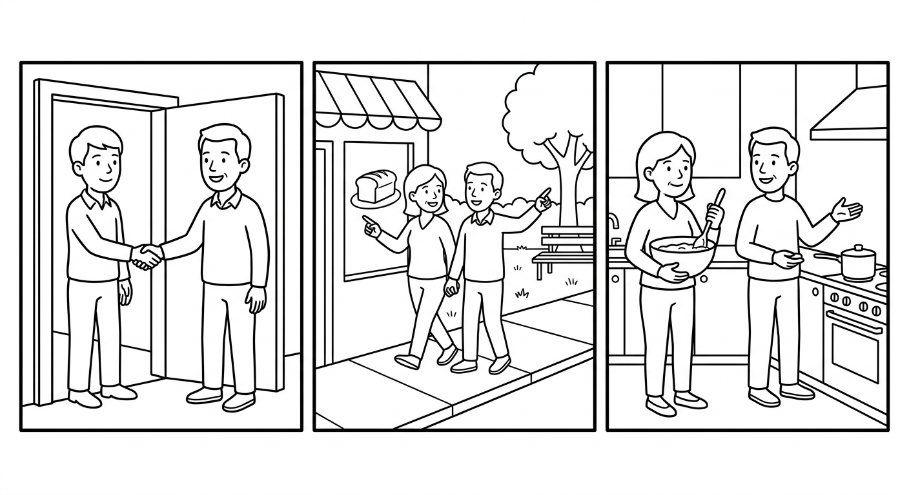

B2 Speaking Mission Exam
Complete two realistic missions from your course. Your goal is not perfect English. Your goal is to communicate, respond, confirm, and keep the conversation alive. (Complete duas missões realistas do seu curso. Seu objetivo não é o inglês perfeito. Seu objetivo é comunicar, responder, confirmar e manter a conversa viva.)

- The examiner gives you two mission cards. (O examinador entrega dois cartões de missão.)
- You receive about one minute to prepare each card. You may write keywords, not a full script. (Você tem cerca de um minuto para se preparar. Pode anotar palavras-chave, não um texto completo.)
- You complete each roleplay and answer follow-up questions. (Você completa cada situação e responde a perguntas extras.)
- The examiner may say one detail quickly or in a confusing way. Use a repair phrase. (O examinador pode falar um detalhe rápido demais. Use uma frase de socorro.)
- Your individual score is out of 100, even when you test with a partner. (Sua nota é individual, de 0 a 100.)
| Scored area | Points | What it means |
|---|---|---|
| Communication | 30 | Complete the mission and make the main message understandable. |
| Understands and responds | 20 | Answer questions and react to new information. |
| Target language | 20 | Use useful B2 grammar, vocabulary, and survival phrases. |
| Pronunciation and clarity | 15 | Speak clearly enough to be understood. |
| Repair language | 15 | Ask for repetition, clarification, confirmation, or slower speech. |
| Total | 100 | Performance score |
Sorry, can you repeat, please? · Slower, please. · What does ___ mean? · How do you say ___ in English? · Do you mean this one or that one? · Sorry, do you mean Saturday or Sunday? · Can you show me? · So, on Sunday at half past four, right?
A Simple Mission Strategy
- Open: greet the person and say what you need or what the situation is. (Cumprimente e diga o que você precisa ou qual é a situação.)
- Ask or explain: ask your questions or describe the place, the plan, or the problem. (Pergunte ou descreva o lugar, o plano ou o problema.)
- Answer: respond to the other person's questions with details. (Responda às perguntas com detalhes.)
- Connect: use because, but, so, and first / then / finally to link your ideas. (Conecte suas ideias.)
- Confirm and repair: repeat the important information back; if you do not understand, ask — do not stop. (Confirme as informações; se não entender, pergunte — não pare.)
Recommended format: one examiner with one student for 6–8 minutes, or one examiner with a pair for 10–12 minutes. Assign two missions per student. At least one must be a report-back mission (Card 6, 7, 9, or 10), where the candidate's information can be checked against your notes or repeated back in order. Card 10 (The Visitor) is the capstone — use it when time allows, and count it as the report-back mission. Use a different card order for neighboring candidates. While students wait, they complete a written review task in another room.
Consistency: ask two follow-up questions per mission and introduce one repair opportunity across the exam (say one time, price, place, or step quickly or unclearly, once). Do not coach, translate the mission language, or supply the target phrase. Procedural instructions ("sente-se aqui", "você tem um minuto") may be given in Portuguese; give mission instructions in English first and repeat them in Portuguese only if the candidate clearly has not understood the task itself.
Grading philosophy (from the chapters): message completion is scored before accuracy — did the student complete the mission? Then check target language and repair. Every chapter's mission ends "without switching to Portuguese": brief Portuguese repair is a small deduction, a full switch is a large one. Do not interrupt errors during the performance. Feedback after the exam may combine English and Portuguese.
The Welcome Interview
You are a volunteer at the community centre welcome desk. The examiner is a new member. Greet them and ask at least five WH questions about their routine, work or school, and daily life. At the end, report three facts you learned. (Você é voluntário na recepção do centro comunitário. Cumprimente a pessoa nova, faça pelo menos cinco perguntas WH sobre a rotina dela e, no final, relate três fatos que você descobriu.)
Answer with simple, consistent facts (invent a job, a neighbourhood, a routine) and note them down. Ask back: "And you? What do you do?" Mission success (from Chapter 1): the volunteer can report three facts about the new member ("She lives... He works...") without reading from the page. Listen for do/does questions, WH words, frequency adverbs, and third-person -s in the report.
The Kitchen Check
You are the cook before a community cooking day. The examiner knows what is in the kitchen. Ask about at least six foods or objects — use How many...? for countable and How much...? / Is there any...? for uncountable — and finish with a spoken shopping list of what is missing. (Você é o cozinheiro antes de um dia de cozinha comunitária. Pergunte sobre pelo menos seis alimentos ou objetos e termine com a lista de compras do que está faltando.)
Invent a kitchen inventory before starting and note it down (e.g., a lot of rice, six eggs, no coffee, a little oil, no tomatoes, some milk). Answer with There is / There are, some/any, and plural forms. Mission success (from Chapter 2): the cook finishes with a shopping list of at least three missing items — without switching to Portuguese. Repair opportunity: answer one quantity very quickly. Listen for How many vs How much, some/any, and irregular plurals.
The Neighbourhood Tour
You are a resident. The examiner is a visitor who has just arrived in your city. Describe your real neighbourhood or city: name at least three places — use a/an the first time and the when you talk about them again — and recommend the best place to eat. (Você é morador. Descreva seu bairro de verdade: pelo menos três lugares, usando a/an na primeira vez e the depois, e recomende o melhor lugar para comer.)
Ask at least four questions: "Is there a...? Where is the...? What's the best...?" and one deliberately vague question ("And that place you said... where is it?") so the resident must clarify. Mission success (from Chapter 3): the visitor can repeat back two places and where they are — without switching to Portuguese. Confirm the two places aloud at the end. Listen for a/an → the, zero article with city names, and the + superlative.
The Shopping Trip
You are a customer in a clothing store. The examiner is the shop assistant. You have a list of at least four items. Say what you need, ask if the store has any, ask the prices, and decide how many to buy. (Você é cliente em uma loja de roupas. Diga o que precisa, pergunte se a loja tem, pergunte os preços e decida quantos vai comprar.)
Invent stock and prices in reais before starting and note them down. Answer with quantifiers (a lot of, a few, some, any, no), refuse one item ("We don't have any..."), and offer one extra item the customer didn't ask for. Repair opportunity: say one price quickly once. Mission success (from Chapter 4): the customer "buys" at least three items with clear quantities and prices — without switching to Portuguese. Listen for some/any, much/many, How much is/are, and price confirmation.
Moving Day
You have just moved into a new home. The examiner is helping you carry things. Describe the new home with at least three There is / There are + quantifier sentences, then tell the helper where five objects in the room go, using this, that, these, those and pointing. (Você acabou de se mudar. Descreva a casa nova com There is / There are e diga ao ajudante onde vão cinco objetos, usando this, that, these, those.)
Prepare five small objects (or use classroom objects: books, pens, a bag, cups, a box). Ask where things go, pointing ("Where do these books go?"), and once say only "Put it there!" without pointing clearly, so the candidate must ask "Do you mean this one or that one?" or you invite them to clarify. Mime placing each object where directed. Mission success (from Chapter 5): the helper puts (or mimes putting) five objects in the right place — without switching to Portuguese. Listen for there is/are + quantifiers and near/far + singular/plural demonstrative accuracy.
The Video Call
You are calling the examiner from a busy place (a street fair, a family lunch, a bus station, or this building right now). Sit back to back, like a phone call. Describe at least five things that are happening, plus what you are doing. (Você está ligando de um lugar movimentado. Sentem-se de costas um para o outro. Descreva pelo menos cinco coisas que estão acontecendo, e o que você está fazendo.)
Sit back to back with the candidate. Ask at least four questions: "What are you doing? What's going on? Is anyone dancing?" and one contrast question ("Do you do that every day, or are you doing it now?"). Once, speak very quietly like a bad connection to create the repair opportunity. Note down what you hear. Mission success (from Chapter 6): the listener can report three things that are happening in the scene — without switching to Portuguese. Say your three things back at the end and check them with the candidate. Listen for am/is/are + -ing accuracy and the routine-vs-now contrast.
The Weekend Plan
Invite the examiner to do something this weekend. Explain what you usually do on weekends, what is different this week, and suggest a day and time. The examiner is busy on the first day you suggest — negotiate until you agree, then say the final plan in one clear sentence. (Convide o examinador para um programa neste fim de semana. Explique sua rotina, o que está diferente nesta semana, e negocie até fechar o plano: dia, hora e lugar.)
Refuse the first day with a temporary reason ("This week I'm helping my uncle paint the house, so Saturday is difficult"). Ask at least three questions ("What are you doing on...? Do you usually...?"). Say the agreed time fast once to create the repair opportunity, and write down the final plan. Mission success (from Chapter 7): both partners can say the final plan — day, time, and place — in one clear sentence without switching to Portuguese. Compare the candidate's final sentence with your notes. Listen for Present Simple vs Continuous choice and arrangement forms with future time.
The Explanation
Something went wrong this week: you were late for class, missed a family lunch, forgot a friend's birthday, or didn't finish your homework. The examiner is the teacher, boss, or friend. Explain what happened, why, and what comes next — using because, but, and so at least once each. (Algo deu errado nesta semana. Explique o que aconteceu, por quê, e o que vem depois — usando because, but e so pelo menos uma vez cada.)
Ask at least three follow-up questions: "Why...?", "What happened next?", "So what are you doing now?" — and ask one question very fast to create the repair opportunity. Decide aloud if you accept the explanation. Mission success (from Chapter 8): the listener can retell the story in two sentences using because and so — without switching to Portuguese. Retell it at the end and let the candidate confirm. Listen for correct because/but/so use and, as a bonus, although.
The Recipe
Teach the examiner something you really know how to do — a simple recipe, how to get to your house from school, or how to use an app. Teach it in at least five steps, using first, then, after that, and finally, and check that the examiner can repeat the steps in order. (Ensine algo que você sabe fazer — uma receita simples, um caminho ou um aplicativo — em pelo menos cinco passos, usando first, then, after that e finally.)
Take notes while the candidate teaches. Ask at least three questions: "What comes after that?", "Can you repeat step two?", "What does ___ mean?" — asking about one word you pretend not to know. At the end, repeat the steps back with ONE step out of order, so the candidate must correct you. Mission success (from Chapter 9): the learner can repeat the steps in the correct order using first, then, and finally — without switching to Portuguese. Listen for sequencers with commas, imperatives without a subject, and one also or however as a bonus.
The Visitor: Three Stops
An English-speaking visitor (the examiner) spends the day with you. Take them through three stops. Stop 1 — Getting to know you: answer questions about your routine, family, and work or school. Stop 2 — The neighbourhood: describe three places using there is/there are, this/that/these/those, and articles. Stop 3 — The market: decide together what to buy using some/any/much/many/a few. (Um visitante passa o dia com você: apresente-se, mostre o bairro e façam as compras juntos — três paradas, tudo em inglês.)
Keep the conversation alive: ask at least five WH questions across the three stops, ask what the people around you are doing (Present Continuous), and once use a word the candidate probably doesn't know, so they must ask "What does ___ mean?" or "Can you say it another way?" Mission success (from Chapter 10): the visitor can report the day in three connected sentences ("First we..., then we..., and finally we...") — and the guide stayed in English at all three stops. Report the day back at the end and let the candidate confirm. This card counts as the report-back mission and takes the time of both missions when used alone with two follow-ups per stop — plan 6–8 minutes. Listen for question answers, place description, quantifiers, connectors, and repair.
Individual Speaking Rubric · 100 Points
| Area | Strong | Developing | Limited | Score |
|---|---|---|---|---|
| Communication · 30 | 26–30: completes both missions; main information arrives clearly | 19–25: completes most steps; some support needed | 0–18: isolated information; mission often incomplete | ____ / 30 |
| Understands/responds · 20 | 17–20: answers and reacts to follow-ups appropriately | 12–16: understands core questions with repetition | 0–11: responses are often unrelated or absent | ____ / 20 |
| Target language · 20 | 17–20: useful B2 forms (Present Simple/Continuous, WH questions, there is/are, articles, quantifiers, demonstratives, connectors) support meaning consistently | 12–16: some useful target language; errors rarely block meaning | 0–11: very limited range or errors frequently block meaning | ____ / 20 |
| Pronunciation/clarity · 15 | 13–15: understandable, audible, manageable pauses | 9–12: generally understandable with occasional strain | 0–8: clarity frequently blocks understanding | ____ / 15 |
| Repair language · 15 | 13–15: independently asks for repetition, clarification, or confirmation | 9–12: uses at least one useful repair with some prompting | 0–8: gives up or switches to Portuguese without trying repair language | ____ / 15 |
| Total | ____ / 100 |
Before exam day:
- Print candidate cards separately from examiner sheets.
- Brief evaluators with the rubric and score two sample performances together.
- Prepare a quiet station, timer, card rotation, five small objects for Card 5, and a waiting-room review task.
- Invent and write down the hidden information for Cards 2, 4, and 7 (kitchen inventory, stock and prices, your busy day) before candidates arrive, so every pair gets the same difficulty.
- Decide whether candidates test individually or in pairs; never give a shared score.
Standard examiner script: "Hello. You will complete two short missions in English. You may ask me to repeat or speak more slowly. Mistakes are okay; keep communicating. You have one minute to read your first card and write keywords. Ready?" At this level, give the script in English first; if the candidate clearly has not understood, repeat it once in Portuguese: "Você vai completar duas missões curtas em inglês. Pode pedir para eu repetir ou falar mais devagar. Errar é normal; continue se comunicando." After the first mission: "Thank you. Now let's move to the second situation." At the end: "Thank you. The exam is complete."
Fairness rules:
- Use the same number of follow-up questions and repair opportunities for all candidates.
- Do not correct language during the performance — message completion is scored before accuracy.
- Do not lower pronunciation scores for accent; score intelligibility.
- Record observable evidence before choosing a band.
- If two evaluators differ by more than 10 points, review the evidence together.
- Offer an accessible alternative format when a documented need makes the standard procedure inappropriate.
Semester grade: Final grade = (Foundation Test 1 × 0.30) + (Foundation Test 2 × 0.30) + (Speaking Mission Exam × 0.40).